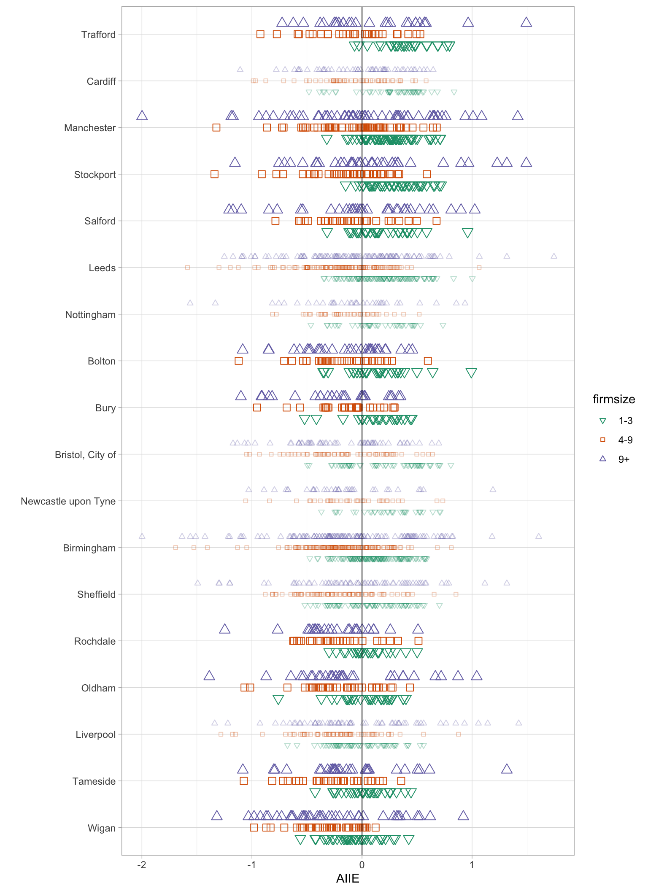
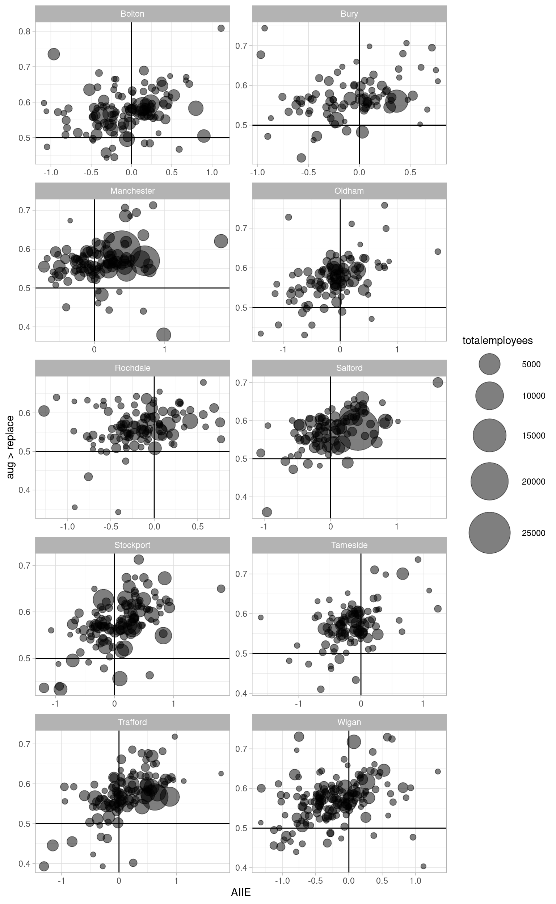
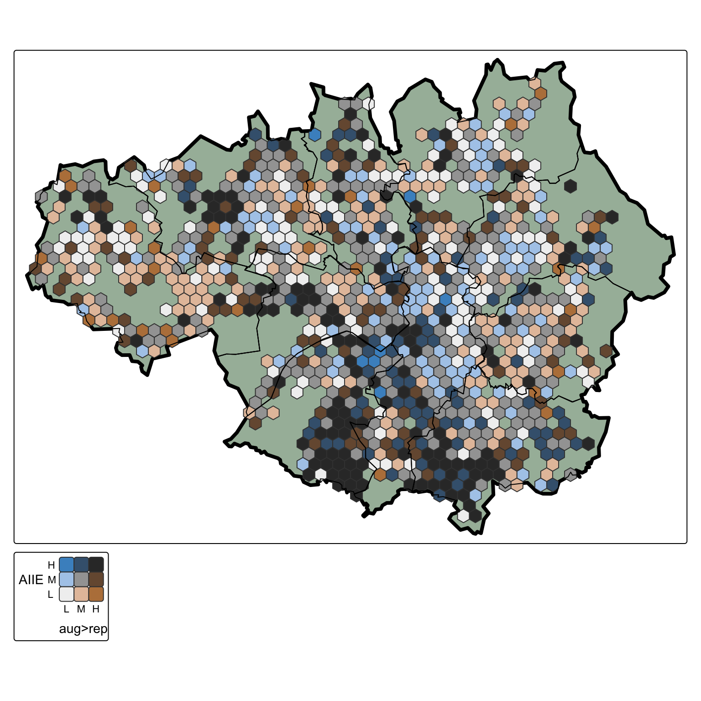
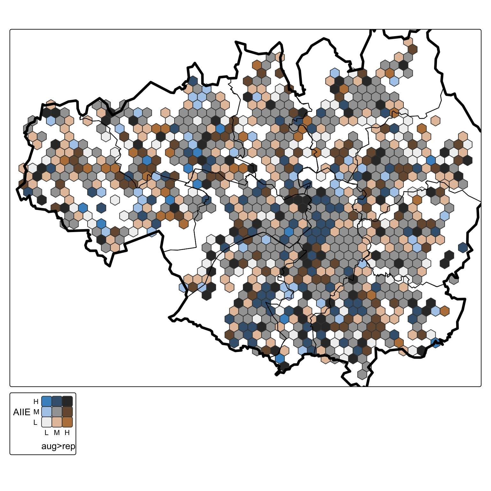
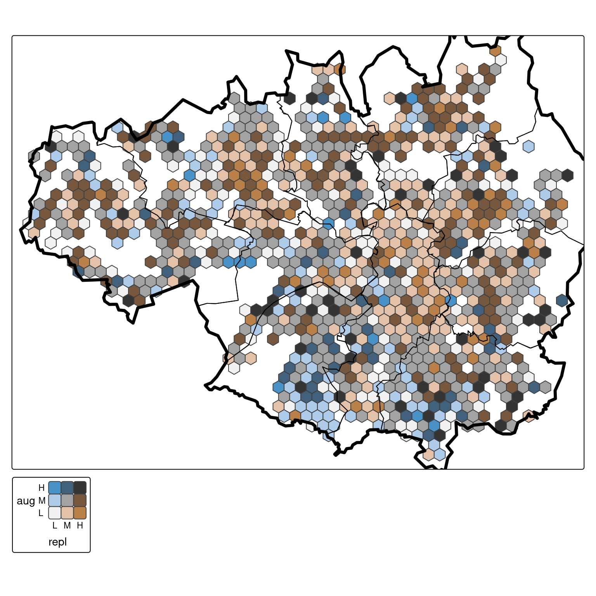
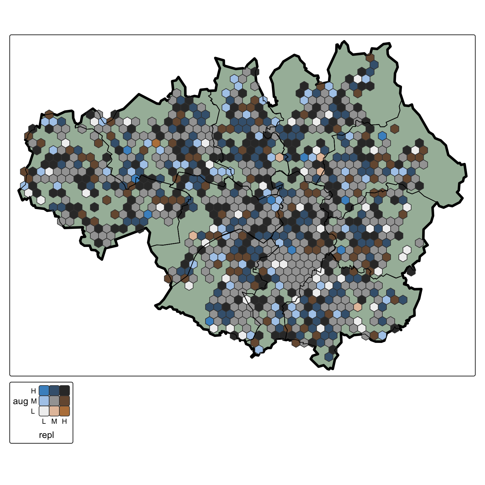

GM AI misc plots
Greater Manchester AI exposure, augmentability and replaceability
The first section applies data from Felten et al paper “Occupational, industry, and geographic exposure to artificial intelligence: A novel dataset and its potential uses” (2021). Original US data available here.
The second section presents results from a ‘jobs replaceable versus augementable’ analysis, looking at those separately as well as linking them to Felten’s AIIE.
Both are linked to Companies House firm level data for Greater Manchester.
Links to interactive maps
Method
This analysis is built on two sources to create two distinct AI measures, each with two sub-indices. First, we use data produced by Felten et al (2021)1. They created two indices - an ‘AI Industrial Exposure’ (AIIE) index that assigns exposure values to U.S. sectors, and an ‘AI Occupational Exposure’ (AIOE) index that does the same for occupation codes. Felten et al normalise each, so that their centre value is zero - effectively, they give a relative measure of ‘less to more exposed’ across the full range of industrial and occupation categories. (The original data is available here.)
The U.S. industry data (NAICS) was ‘cross-walked’ to U.K Standard Industrial Classification data from the ONS, matching against what were the most appropriate SIC codes. These varied from 2 to 5 digit codes. An algorithm was then used to apply AIIE values to firm data from UK Companies House that ‘cascaded’ the most appropriate AIIE value at the most granular level possible, by applying 5 digit values where applicable, then 4 digit, then 3, then 2. Firms in Companies House use up to four different 5 digit SIC codes, though most have only one. The AIIE was averaged for any firms using more than one. This produced specific AIIE values for each UK firm. When applying the Companies House AIIE per-firm values to the analysis, these are always weighted by the number of employees per firm if, for example, producing a weighted average for UK geographies or sectors.
To utilise Felten’s occupation measure - the AIOE, based on O*NET - we applied its values to UK Census data for 2021, again cross-walking from U.S. to U.K occupation codes. Those values match much more easily than sector codes, making it relatively straightforward to create an AI measure that estimates how much residents are exposed where they live (rather than firms).
For the second distinct AI measure, we use automated assessment using an LLM to produce probability values, following a similar method to Henseke et al (2025)2. Where they prompt an LLM to produce probabilities for task exposure, here we separately generate repeat-sample values for “probability sector jobs may be replaceable by AI” and “probably sector jobs may be augmentable by AI”, using a locally-run instance of Llama 3.1. These repeat probabilities are then used to produce two different kinds of value. Firstly, “probability augmentable” and “probability replaceable” are repeatedly run against each other for all sampled values within 3 digit SIC sectors to produce a spread of “job is more likely augmentable than replaceable”. This is a single dimension value. Secondly, values within each of ‘augmentable’ and ‘replaceable’ are used as probabilities within a Bradley Terry model, where pairwise comparisons between repeat probabilities can be used to produce log-likelihoods of a sector ‘winning’ over another sector, allowing all sectors to ranked separately on ‘augmentable’ and ‘replaceable’ axes. The two measures strongly correlate, but it is useful to be able to think about the two measures as applying separately to different tasks and jobs within sectors.
It is important to note that both Felten et al’s measure and the ‘augment versus replace’ measures are relative - sectors and occupations may be higher or lower on these different exposure scales, but no claim is made about specific jobs or firms being likely to, for example, lose a certain proportion of jobs. A firm higher on ‘replaceable jobs’ values is just more likely relative to another firm lower down the scale.
One paragraph summaries of findings from figures, with fig-hover references
Includes some repeated text from below. Hover over figure references for preview. (One or two are interactive, so you’ll need to click through for those.)
Figures linking Felten AI exposure indices to UK data
- Figure 1 shows Felten’s AI industrial exposure (AIIE) index applied to firms from Companies House data, in Greater Manchester boroughs, at MSOA level (with other core cities for comparison). Firms with 1 to 3 employees (green down-pointing triangles) are generally in more exposed sectors than other sized firms (though with overlap) and clearly more exposed than firms with 4-9 employees (red squares). That pattern is stronger in some places (Trafford, Stockport, Bolton) than others. The overall AIIE exposure level per borough is mostly consistent within them, for different size firms. So Rochdale, Oldham, Tameside and Wigan are overall lower on the AIIE measure.
- Figure 2 instead links Felten’s AI occupational (AIOE) exposure index to residents in Greater Manchester MSOAs (using Census 2021 data), again comparing boroughs against other core cities. While the overall spread is less far from the mean (the AIOE is also normalised), some local authorities are clearly much more exposed, on this measure. For example, Trafford has very few MSOAs less than the AIOE mean. Residents in Greater Manchester and core cities’ MSOAs tend to be on the ‘more exposed’ side of zero. With some differences, the overall average order of local authorities doesn’t differ hugely from that found in firm level data.
Adding in separate LLM-produced measures for ‘probability of job being augmentable’ and ‘probability of job being replaceable’
- Figure 3 breaks Greater Manchester’s geography down into 1000 metre hexagonal blocks, and for each block’s firms, compares Felten’s AIIE exposure measure (x axis) to ‘probability of jobs in this hex are more augmentable than replaceable (aug > replace)’ (y axis). Circle size shows job count in each hex. There is generally a positive slope: more exposed jobs are on average also in more augmentable-jobs sectors (this matches results others have found). The bottom right quadrant for each borough is the “high exposure plus jobs more likely to be replaceable” hexes. There aren’t many of these, though most boroughs have one or two (with central Manchester having the most jobs in this quadrant). Some boroughs are clearly more ‘augment’ than ‘replace’ (Salford, Rochdale) while still having a spread of exposure. Other boroughs have more in the bottom left quadrant: more replaceable jobs in theory, but less exposed so less AI risk (E.g. Wigan and Trafford).
- The maps in Figure 4 and Figure 5 plot the hex data (same data as Figure 3), breaking down by micro-firms with 1 to 3 employees in Figure 4 and firms with 4+ employees in Figure 5. Firms with 1 to 3 employeesjump out as exposed in a different way, even when compared to larger micro-firms. These are bivariate maps - each axis has three values of ‘low / medium / high’, making nine possible combinations of the AIIE (y axis) and “aug>replace” (x axis). Consider just the top row of those nine values: all high AIIE and covering low, medium and high “augment more than replace” probability. The darkest colour is “high AIIE / high augment probability”; this clearly clusters much more for 1-3 employee firms, especially in Stockport and Trafford, but smaller geographical-spread clusters of “high for both” are visible elsewhere. There are very few “high AIIE but replaceable more likely than augmentable” (the clearest blue, top left in the legend) - although many more darker blue (top=mid) “high AIIE, equally likely augment as replace”, which could be either. It’s that darker blue colour that has strong clustering in 4+ firms in Figure 5, especially in central Manchester. Of equal interest are the low exposure zones (legend bottom row); both maps have clusters of these.
- The hexmaps in Figure 6 (firms with 1 to 3 employees) and Figure 7 (4 plus employees) show results for separate ‘probability of jobs being replaceable’ versus ‘probability of jobs being augmentable’ (in theory, separately from whether those jobs are actually AI-exposed, although there are different ways of viewing these measures). The diagonal colours on the 2-variable legend here could all be equivalent to ‘probability more augmentable than replaceable is even’. Colours on the sides are the most interesting. For example, for firms with 1 to 3 employees in Figure 6, the previously identified southern clusters appear as clearly more augmentable - with low to medium replaceable probability. Figure Figure 7 clearly lacks the yellow/brown “low aug medium to high replace” colours of the 1-3 employee map. The next few results try to dig deeper into these differences and put Greater Manchester in a national context.
Percent of jobs in the top Great Britain deciles of each measure
- For Figure 12 and Figure 13, every job in Great Britain is ranked and allocated to deciles for the two pairs of measures (AIIE vs ‘aug > replace’; ‘augmentable’ vs ’replaceable). The two plots then show the percent of jobs in each local authority that are in the top 10% in Great Britain (most exposed vs highest augment vs replace prob, then highest aug and replace prob separately). By definition, 10% of jobs overall will be in the top decile - the plots mark that 10% line, showing if GM boroughs are above or below that average. This is concentrating not on the averages, but on the smaller section of most exposed firms and checking how they compare nationally. Both figures suggest Manchester, Stockport and Trafford have more than the average number of jobs in top most exposed / highest augment probability decile, in both plots. Figure 13, comparing the two separate aug and replace measures, shows most GM boroughs with fewer jobs than the GB average in the top decile for each.
Data / methods
Companies House data
UK firm-level data has been extracted from Companies House, for accounts filed July 2024 to 2025. Data extracted includes employee numbers on the date of account submission and also the year previously, as well as sector SIC codes down to 5 digit level. Firms can assign themselves up to four different SIC Codes. All of these are used in assigning AI index values - each SIC code is given equal weight, averaging values for each. Only firms with at least one employee are used. Not all firms have employee counts - of those that have at least one employee, nearly 43% are single-person firms. Firms are geocoded based on their address postcode, allowing a choice of granular geographies.
Full results
AI Industry Exposure (AIIE) applied to UK Companies House data
In this section, results are summarised per MSOA in Greater Manchester (and core cities for comparison) and broken down into three groups: firms with 1-3 employees, firms with 4 to 9 employees and 9+ employee firms.
- AIIE on the x axis. Higher values are more exposed firms. Data is normalised, so an AIIE of zero is the mean value and 1 is a single standard deviation.
- An AIIE average (weighted by employee number) is found for each MSOA, broken into the 3 firm size groups.
- Local authorities are ordered top to bottom by average AIIE overall. Greater Manchester boroughs are larger, bolder points; core cities are smaller/fainter.
Three things jump out.
- Firms with 1 to 3 employees (green down-pointing triangles) are generally in more exposed sectors than other sized firms (though with overlap) and clearly more exposed than firms with 4-9 employees (red squares).
- That pattern is stronger in some places (Trafford, Stockport, Bolton) than others
- The overall AIIE exposure level per borough is mostly consistent within them, for different size firms. So Rochdale, Oldham, Tameside and Wigan are overall lower on the AIIE measure.
Initial results for ‘jobs/tasks augmentable’ versus ‘jobs/tasks replaceable’
This section contains initial outputs from repeat LLM runs to extract probabilities for UK sectors having jobs/tasks that are (a) likely augmentable by AI; (b) likely replaceable by AI (running on a local instance of Llama 3.1).
AIIE vs augmentability
This first plot does the following:
- X axis: Felten’s AI Industrial Exposure (AIIE). Higher values are more exposed 1000m hexes in Greater Manchester (as in the interactive maps above).
- Y axis: “probability a job is more augmentable than replaceable (aug > replace)” within a sector (equivalent to complementarity index), applied to firms in Companies House.
- Circle size is employee count per 1000m hex.
- Broken down by Greater Manchester borough.
Some things to note:
- The same positive relationship seen in other results - more exposed jobs are on average also in more augmentable-jobs sectors
- Bottom right quadrant is the “high exposure plus jobs more likely to be replaceable” hexes. There aren’t many of these, though most boroughs have one or two (with central Manchester having the most jobs in this quadrant). Note though, this is a probability - so e.g. an augmentable value of 0.6 would still on average suggest 40% of jobs in that sector could be replaceable.

Bivariate hexmaps for AIIE vs “aug > replace”
This and the next few plots are bivariate maps - each axis has three values of ‘low / medium / high’, making nine possible combinations of the two of them.
These two maps:
- Puts ‘probability job is more augmentable than replaceable’ (aug>repl) along one axis, with Felten’s AIIE exposure index on the other.
- The first is for firms with 1 to 3 employees, the second for firms with 4+ employees.
- Data for firms is summarised per 1000m hex (averages weighted by employee count and across any of the , as above).
- Hexes are only shown if they have a min of 10 employees in them.
So for example, in the map of firms with 1 to 3 employees:
- The darkest hexes in the south of Greater Manchester are high aug>rep (highest probability of jobs being more augmentable than replaceable) and also high AIIE (they have most AI exposure).
- There are only a few hexes with the legend’s top left clear blue - high exposure but jobs more likely to be replaceable.
- In both maps, there are large areas of high exposure with the middle aug>rep probability (jobs likely a mix of both augmentable and replaceable).
1 to 3 employees

4+ employees

‘Augmentable’ and ‘replaceable’ each on their own scale
Here, two separate indices have been generated that each rank sectors as ‘jobs more/less likely to be (1) replaceable and (2) augmentable in this sector compared to other sectors’.
These two indices are made by ‘competing’ repeated sectors against each other (using the probabilities assigned from the LLM) and putting these pairwise outcomes into a Bradley Terry model to produce a ‘sector x more likely to be augmentable than y’ ranking. These are then mean-centred (keeping the relative log-likelihoods between sectors intact).
Where (270 3 digit SIC) sectors are located on the separate aug / replace axes
This first interactive plot just shows those two scales on each axis to illustrate where the method places each sector - hover for sector name.
Separate augment / replace hexmaps
These maps put ‘probability augmentable (high/medium/low)’ and ‘probability replaceable (high/medium/low)’ on separate axes, again meaning there are nine possible values.
As above, there is one map for ‘firms with 1 to 3 employees’ and a second for ‘firms with 4+ employees’.
Some comments on these two maps:
- There’s an obvious stark difference for 1-3 employee vs 4+ employee firms - for 1-3s, there are large areas with lower augmentable and medium to high replacable.
- Though there’s a cluster (matching the one above for aug>repl vs AIIE) that’s low replaceable / medium augmentable (which fits with ‘prob aug is more than prob replace’ but here we can get a better idea of the actual scale of both).
- The 4+ map has a lot more hexes in the max category for both aug and replace.
Firms with 1 to 3 employees

Firms with 4+ employees

Extra bits
Footnotes
Felten, E., Raj, M., Seamans, R., 2021. Occupational, industry, and geographic exposure to artificial intelligence: A novel dataset and its potential uses. Strategic Management Journal 42, 2195–2217.↩︎
Henseke, G., Davies, R., Felstead, A., Gallie, D., Green, F., Zhou, Y., 2025. How Exposed Are UK Jobs to Generative AI? Developing and Applying a Novel Task-Based Index.↩︎